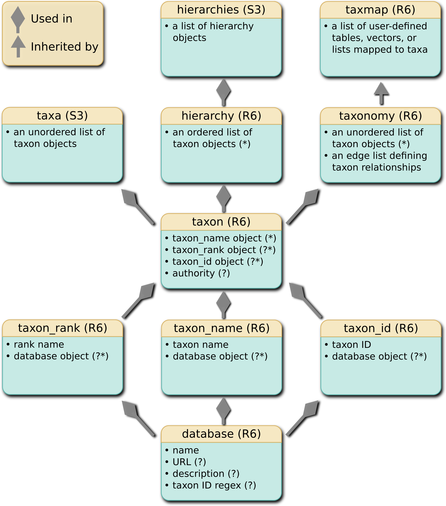
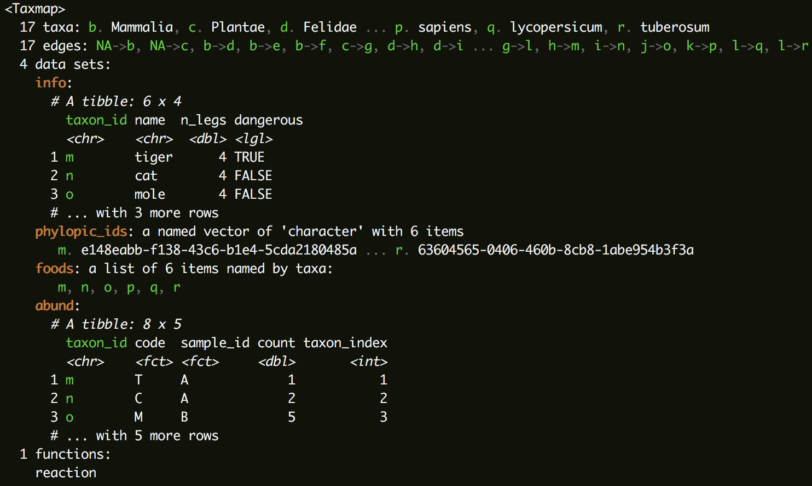
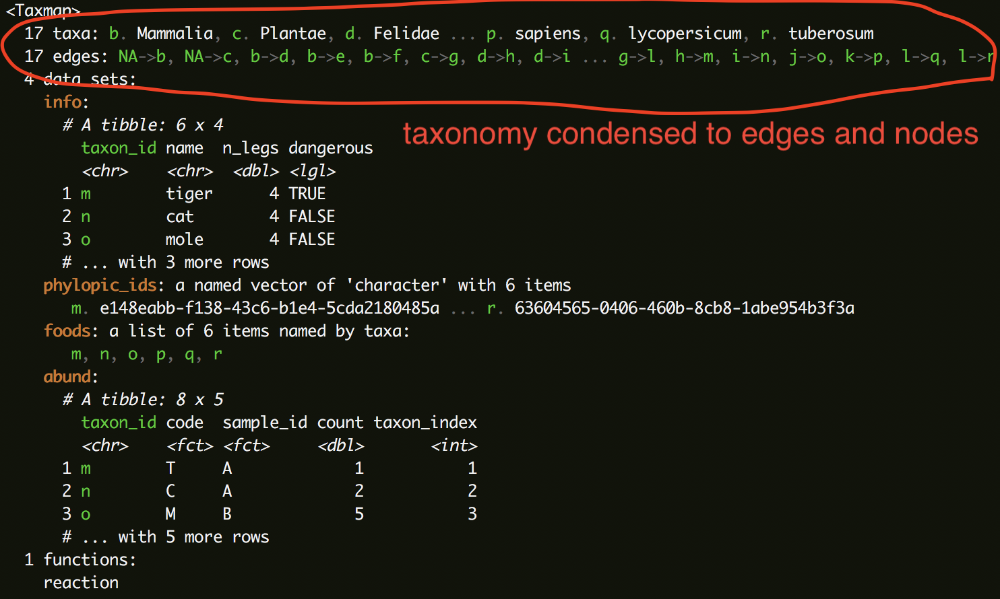
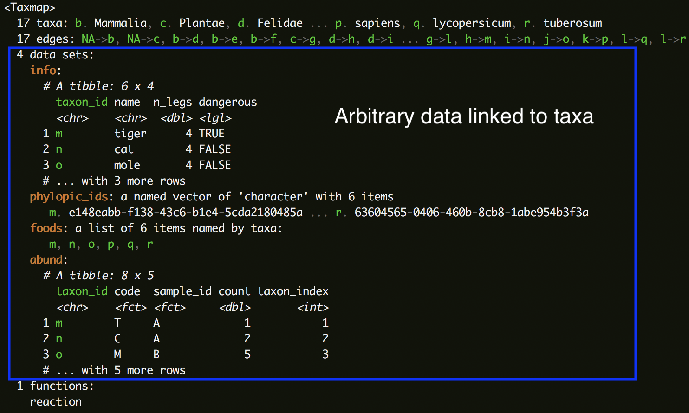
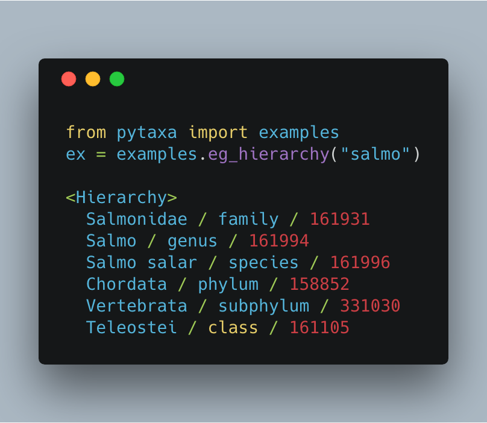
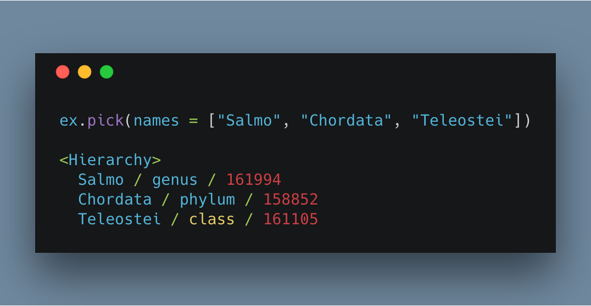

taxonomic data methods for R & Python
Scott Chamberlain ( @sckottie) and Zachary Foster
UC Berkeley / rOpenSci

scotttalks.info/bosc18

LICENSE: CC-BY 4.0
main collaborator on this work: Zach Foster
also an rOpenSci 2018 Fellow: Introducing the 2018 rOpenSci Research Fellows!
challenges of taxonomic data
- taxonomic data is hierarchical
- "taxa" can be names, classifications of names, or ids
- diff. sources of taxonomic data (e.g. NCBI vs. COL)
- may have different names and ids for the same taxon
- often associated with other data
- ideally taxa filtering is linked to data
taxa: the R package
github.com/ropensci/taxa- classes to hold taxa, taxonomies, and associated data
- flexible parsers to convert raw data to those classes
- dplyr-inspired functions to easily manipulate classes
- any filtering/subsetting keeps all data linked together
- flexible base for other packages to build on

taxmap: user defined data mapped to taxonomy
taxmap: user defined data mapped to taxonomy
taxmap: user defined data mapped to taxonomy
manipulate taxonomic data
Subset taxonomy and data to one taxon:
filter_taxa(x, taxon_names == "Plantae", subtaxa = TRUE)filter_taxa(x, taxon_ranks == "genus", supertaxa = TRUE)filter_obs(x, "info", n_legs == 4, drop_taxa = TRUE)mutate_obs(x, "info", bipedal = n_legs == 2)pytaxa: the Python package
github.com/sckott/pytaxa docspip install pytaxa
in development: porting taxa R client to Python


taxa/pytaxa plans
- pytaxa parity with taxa
- shuttle data between pytaxa & taxa?
- protocol buffers?
- arbitrary data backends? (e.g., sqlite db of taxonomy or user data)
- mappings to Darwin Core terms